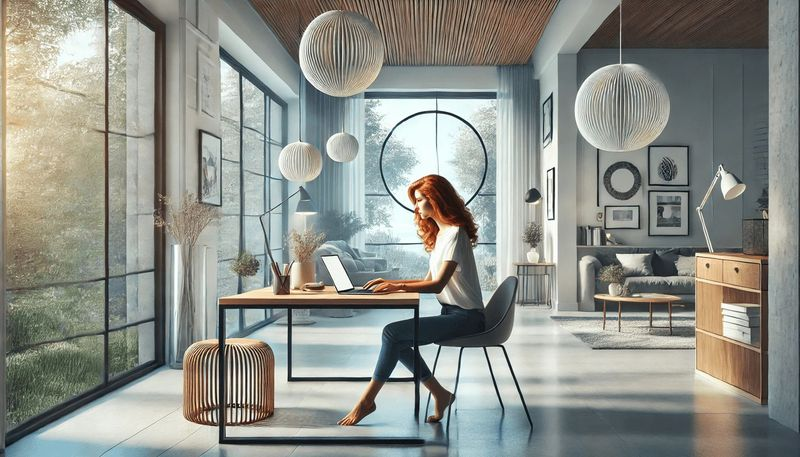

Beruf & Studium: Wie ich Balance finde

Der Spagat zwischen Beruf und Studium kann eine echte Herausforderung sein – und in meinem Fall wird das Ganze noch spannender durch meine freiberufliche Tätigkeit, mein Masterstudium und meine Leidenschaft für meine Tiere. Als jemand, der vom Bachelor in Wirtschaftsingenieurwesen (Industrial Engineering) zu einem Master in Systems Engineering Mechatronik gewechselt ist, habe ich viel über Prioritäten, Zeitmanagement und auch über persönliche Grenzen gelernt.
Hier ist meine Geschichte, wie ich all das unter einen Hut bringe – mit authentischen Einblicken in die Höhen und Tiefen.
Mein Quereinstieg: Vom Wirtschaftsingenieur zur Mechatronik
Nach meinem Bachelorabschluss in Industrial Engineering war mir klar, dass ich mich weiter spezialisieren wollte – in eine Richtung, die technischer und praxisorientierter ist. Der Master in Systems Engineering Mechatronik schien ideal, aber er brachte auch Herausforderungen mit sich.
Der Wechsel von einem interdisziplinären Studium, das eher auf Management und Wirtschaft ausgerichtet war, zu einem stark technikgetriebenen Studiengang war kein leichter Schritt. Ich musste mich in Themen wie Regelungstechnik, MATLAB-Programmierung und komplexer Mechanik neu einarbeiten – während ich gleichzeitig meine freiberufliche Tätigkeit im Bereich Lehre und Beratung weiterführte.
Dieser Quereinstieg bedeutete, dass ich oft das Gefühl hatte, „aufzuholen", während andere bereits einen Vorsprung hatten. Aber es hat mir auch gezeigt, wie viel ich durch hartnäckiges Lernen und Anpassungsfähigkeit erreichen kann.
Freiberuflich arbeiten: Flexibilität mit Verantwortung
Als freiberufliche Beraterin unterstütze ich unter anderem Hochschulen und Studierende bei der Optimierung und Durchführung von Vorlesungen. Dieser Job bietet mir Flexibilität, aber er fordert auch Verantwortung.
Es gibt Tage, an denen ich Vorlesungen vorbereite, während ich gleichzeitig eine Abgabefrist für eine Projektarbeit im Studium im Nacken habe. Und dann gibt es noch die Treffen mit Kunden, die genauso wichtig sind wie meine Noten.
Was mir hilft, ist eine klare Priorisierung:
- Kommunikation: Ich bespreche Deadlines frühzeitig mit meinen Kunden, um sicherzustellen, dass ich alles unter einen Hut bekomme.
- Planung: Ein gut strukturierter Wochenplan ist mein bester Freund – ich plane Zeitblöcke für Studium, Arbeit und Freizeit.
- Nein sagen: Das Schwierigste ist manchmal, Aufträge abzulehnen, wenn ich weiß, dass sie meine Kapazitäten überschreiten würden.
Meine Auszeiten: Hund & Pferd
Zwischen all den To-dos und Deadlines sind mein Hund und mein Pferd meine größten Ausgleiche.
Mein Hund erinnert mich jeden Tag daran, wie wichtig es ist, rauszugehen und eine Pause zu machen – egal, wie stressig der Tag ist. Unsere Spaziergänge sind für mich wie kleine mentale Reset-Momente, die mich wieder klar denken lassen.
Mit meinem Pferd verbringe ich die ruhigsten und zugleich erfüllendsten Stunden. Die Arbeit mit einem Tier erfordert vollkommene Präsenz im Moment, und genau das hilft mir, den Kopf frei zu bekommen. Ob ein ausgedehnter Ritt oder nur die Zeit im Stall – hier finde ich eine Balance, die ich anderswo nicht erlebe.
Die größten Herausforderungen: Zeit & Energie
Natürlich gibt es Tage, an denen es schwerfällt, alles unter einen Hut zu bringen. Manchmal fühlt es sich so an, als würde ich eine Deadline jagen, während ich gedanklich schon bei der nächsten Aufgabe bin. Aber ich habe gelernt, dass es okay ist, nicht immer alles perfekt zu machen.
Was mir in schwierigen Momenten hilft:
- Erfolge feiern: Auch kleine Fortschritte – wie das Bestehen einer schwierigen Prüfung oder die positive Rückmeldung eines Kunden – geben mir neuen Antrieb.
- Unterstützung suchen: Familie, Freunde und mein Partner sind eine riesige Hilfe, wenn es mal zu viel wird.
- Eigene Grenzen anerkennen: Es ist in Ordnung, auch mal eine Pause einzulegen oder eine Aufgabe später zu erledigen.
Mein Fazit: Balance ist ein Prozess
Beruf und Studium zu vereinbaren, ist keine einfache Aufgabe, und es gibt keine perfekte Lösung. Aber es geht darum, die eigenen Prioritäten zu kennen und sich immer wieder daran zu erinnern, warum man diesen Weg gewählt hat.
Für mich ist es die Liebe zur Technik, das Streben nach Wissen und die Freude daran, Lösungen zu entwickeln – sowohl in der Lehre als auch in meinen eigenen Projekten. Gleichzeitig geben mir meine Tiere und die Zeit mit ihnen die Energie, die ich brauche, um all das durchzuziehen.
Am Ende ist es nicht der perfekte Zeitplan, der zählt, sondern die Fähigkeit, flexibel zu bleiben, sich auf das Wesentliche zu konzentrieren und das Leben in seiner Gesamtheit zu genießen.